Overview
Having undergone most of my learning for this module at home in quarantine due to Covid-19, I wanted my project to be related to cleanliness, sanitisation or disinfection. With that in mind, i started brainstorming on different products and methods in which i could do one of those 3 thngs. I needed my project to be viable for me to fabricate but still pose a challenge as well as most importantly, to be practical.
What i came up with was a UV sterilizer.
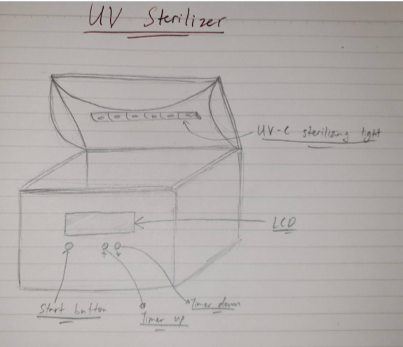-The UV sterilizer will allow you to set the amount of time you want you want to sterilize whatever you put in it with the timer buttons, up for more time and down for less.
-Press the start button after you have set the timer and closed the lid to start the sterilization.
-After the start button has been pressed, the UV lights wil activate for the set amount of time after which, the item you put in will be sterilized.
Bill of Materials
- 1 X UV-C light strips
- 3 X push buttons
- 1 X LCD
- Housing to be laser-cut
- Platform for items to be 3d-printed
- 1 X Arduino Uno
After planning out the basic form and function of my project on paper, I started designing the housing for the project using Fusion 360. I started with the front face and set user parameters so that changing dimensions would be much easier in later stages if I had decided to alter the size of the housing.
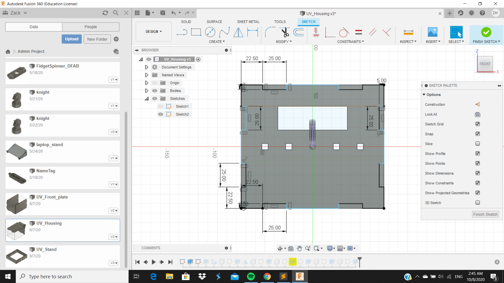 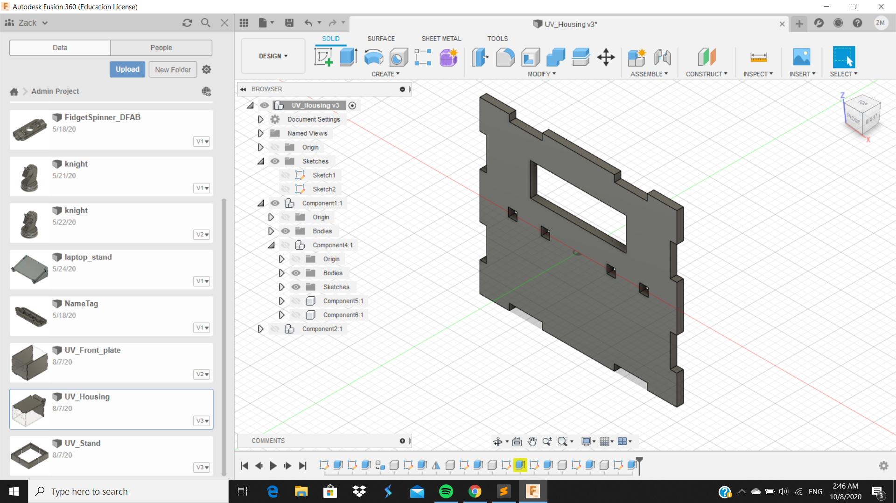This is the finished design for the front face of the housing. There will be openings for the LCD, 4 push buttons as well as cut-outs for the other faces to fit.
After completing the front face, I moved on to the rear face and for that, I had to have two slots to be able to accomodate a hinge for the top plate. Besides the two slots, there were no other details or cuts required for the rear face so it has the same dimensions and cut-outs as teh front face.
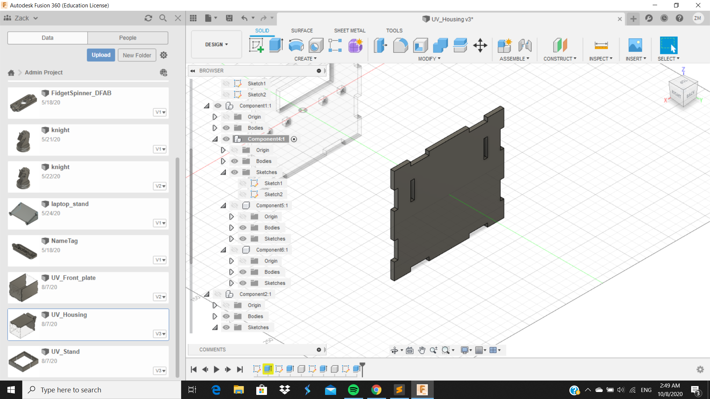Moving on to the side faces, there would be no cuts or details on either side so the process was quite simple. Following the parameters i had set earlier, I was able to design one side along with the cut-outs to fit the top, front, bottom and rear faces and proceeded to mirror the component to the pther side to get two side faces
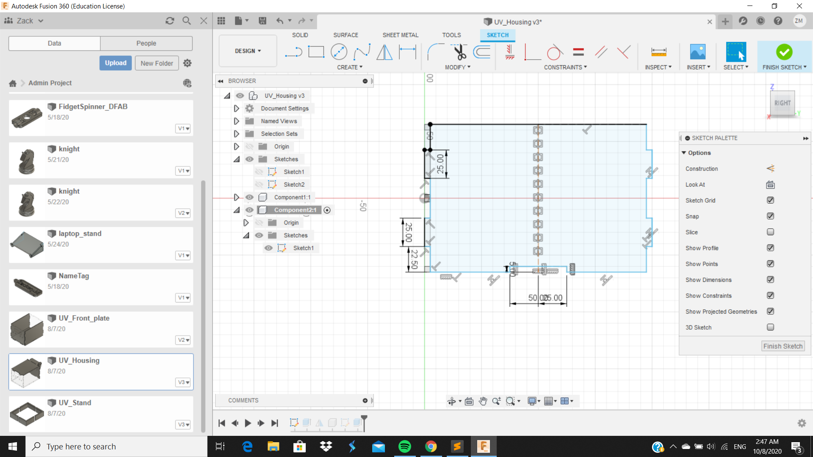 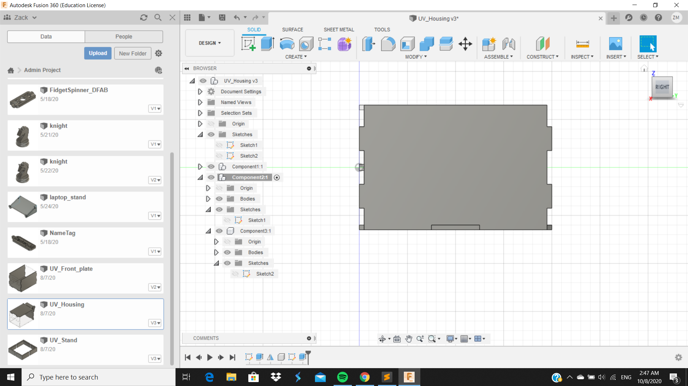The next thing I did was construct the base which was quite simple to do with all four sides already constructed, all I had to do was trace out the outline of the cutouts and extrude the drawing.
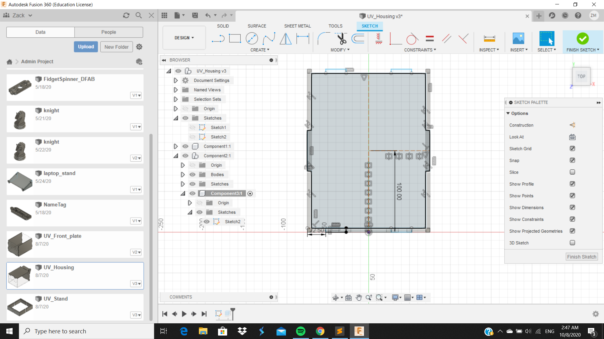 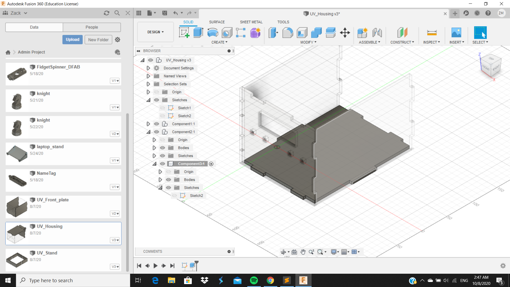The most challenging part of the design was coming up with a hinge that was one piece and that could also be laser cut from 5mm plywood (which is what the housing will be made of and cut from). This was what i came up with.
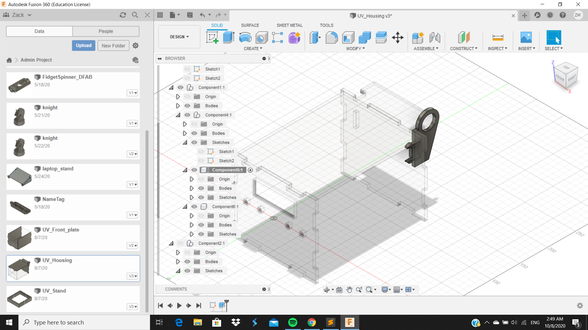As can be seen from the picture above, the hinge will fit in therear face of the housing and will sandwich the top plate so that it may rotate.
Finally, i designed the top plate last so that it was easier to be able to fit everything and finding the dimensions to fit the top plate with the hinge would be much easier
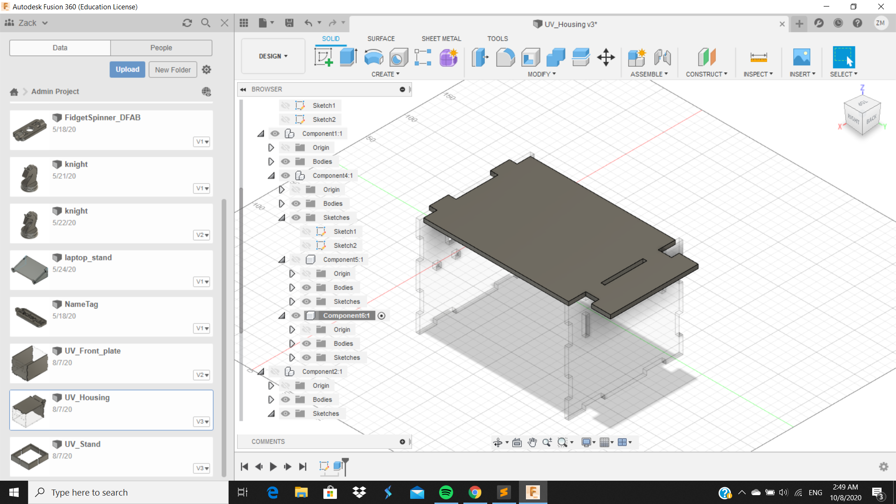This is what the designed product looks like
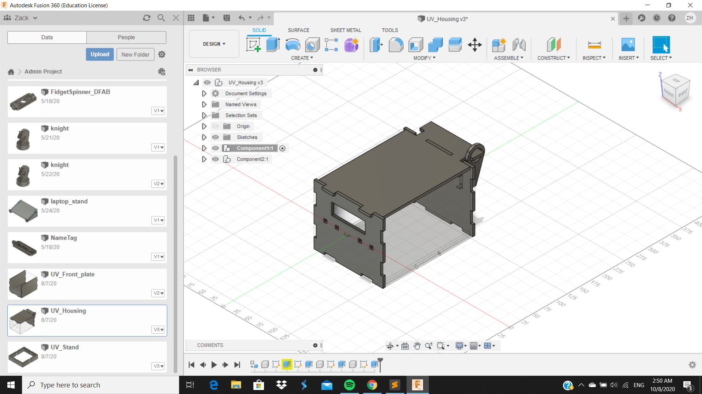 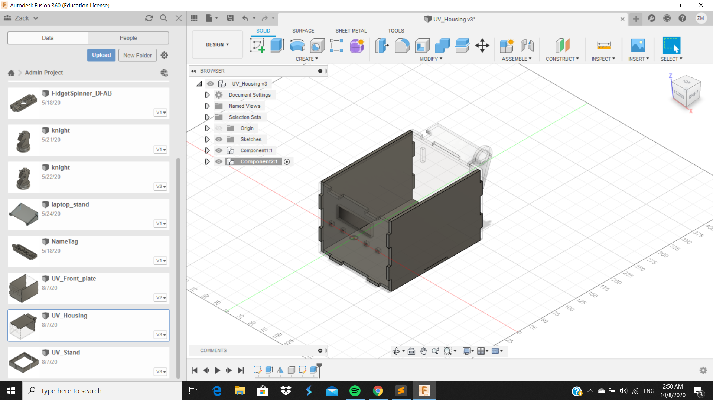